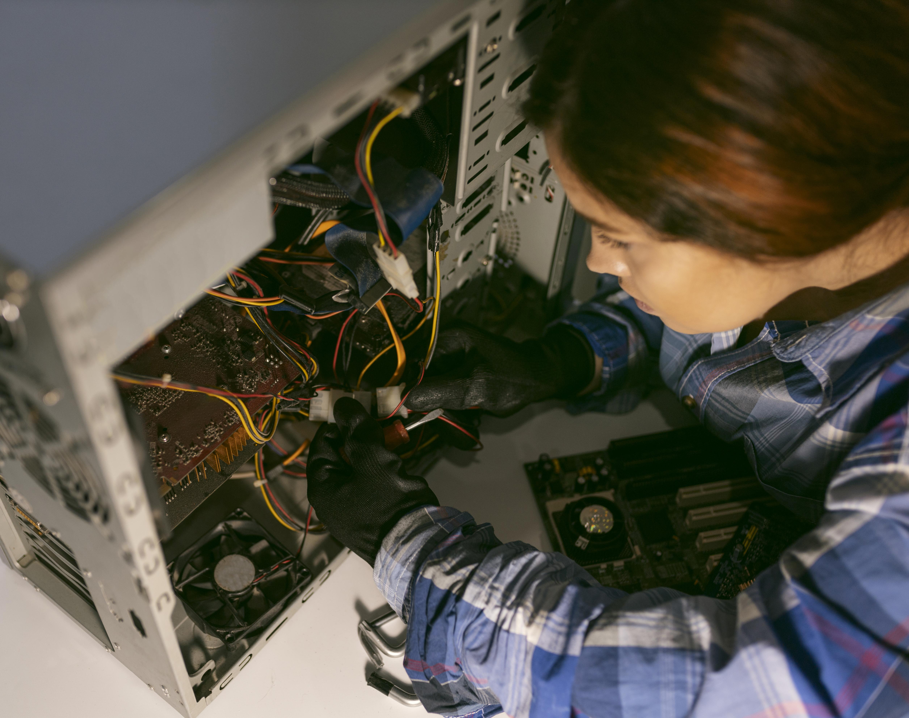

Montaje de Equipos
No solo montamos las piezas. Te ayudo a elegir la mejor CPU y RAM según lo que necesites, ya sea para jugar o trabajar. Cambiamos tu viejo disco por un SSD para que el sistema arranque en segundos y revisamos que la ventilación sea la correcta para que no se caliente.